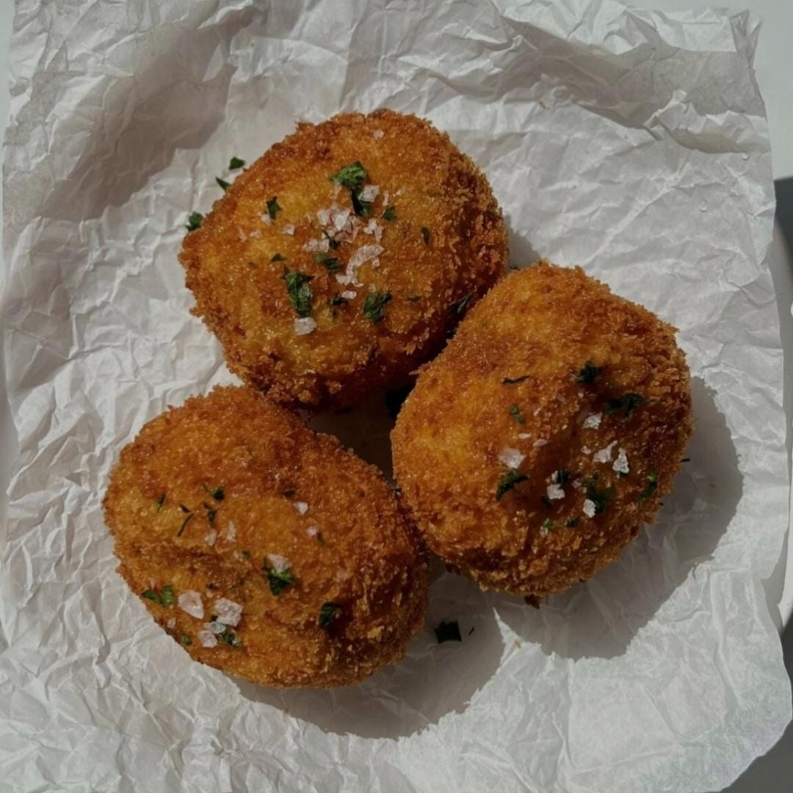

Croquettes


Zutaten:
(1 Portionen)
| 4 | Katoffeln |
| 2-3 El | gehackte Petersilie |
| 1 El | Knoblauchpulver |
| 1 El | Zwiebelpulver |
| Mozzarella, gewüfelt | |
| Panko-Brotkrumen | |
| Mehl | |
| Ei |
Schritte der Anleitung:
- In einen Topf die Kartoffeln und so viel Wasser geben, dass die Kartoffeln bedeckt sind, zum Kochen bringen und kochen, bis die Kartoffeln gabelweich sind.
- Nach dem Garen abtropfen lassen und in eine Schüssel geben.
- Petersilie, Knoblauchpulver, Salz und Pfeffer hinzufügen und gut vermischen.
- Nehmen Sie eine Kugel der Kartoffelmischung und drücken Sie einen Käsewürfel in die Mitte (ölen Sie Ihre Hände bei Bedarf ein).
- Stellen Sie sicher, dass der Käsewürfel vollständig, von der Kartoffelmischung bedeckt ist.
- Wiederholen, bis die gesamte Kartoffelmischung aufgebraucht ist.
- Panieren: Die Kugeln mit Mehl bestreichen, dann mit Ei und zum Schluss mit Panko-Semmelbröseln bestreichen. Frittieren, bis es goldbraun ist.
- Etwas abkühlen lassen, mit mehr Petersilie und Meersalzflocken bestreuen.